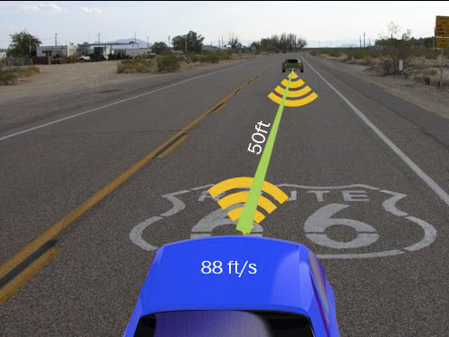
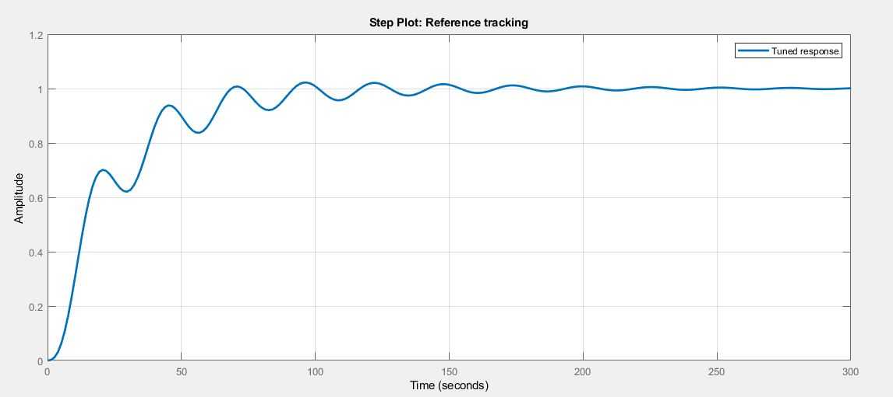
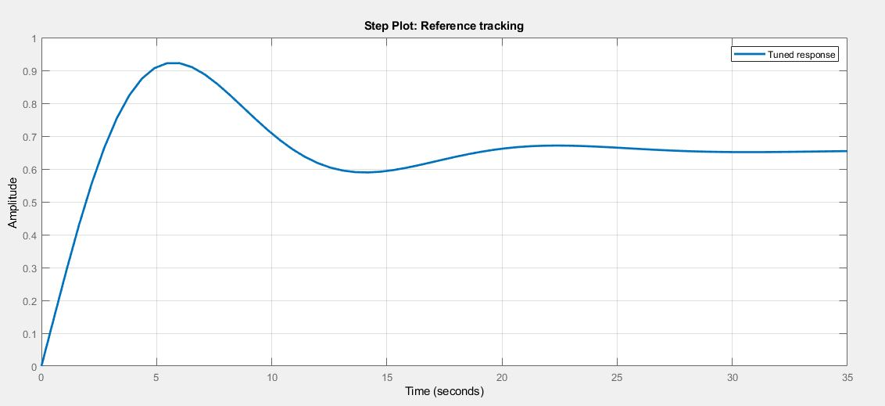
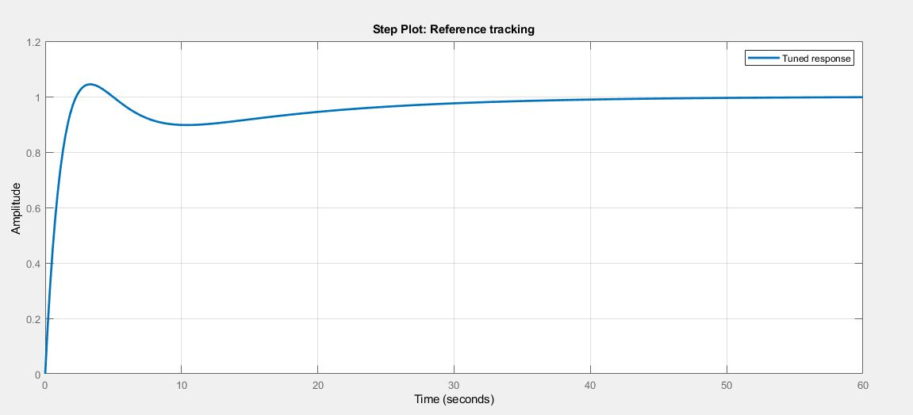

Adaptive Cruise Control - Team Lead
Click on the image below to view the PowerPoint presentation for this project:
For this project, we were tasked with creating a PID Controller to create and simulate an Adaptive Cruise Control system using Matlab and Simulink. The group set out to define parameters such as speed, distance, brake-time, etc. and define those within the program to create a model using a typical Spring, Mass, Damper model.

This model was then modified using a Proportional (P) Controller with the results shown below:

Then it was modified using a Proportional-Integral (PI) Controller and Proportional-Derivative (PD) Controller with the results shown respectively below:
 Finally, the model was modified using a Proportional-Integral-Derivative (PID) Controller and showed the following result:
These results were verified using transfer functions and showed that with the appropriate application of a PID controller, a safe and effective adaptive cruise control could be implemented. The final result needed to show that the cruise control could respond to a rapid deceleration by the lead car while still being safe for the occupants, ensuring that all parties remain safe and unharmed.
Through this project, I learned how to not only implement transfer functions for applications in the real world, but also how to utilize Matlab and Simulink to assist in quickly and efficiently optimizing those functions. I spent dozens of hours studying and learning about how to use this program and continue to use it today on my current applications.